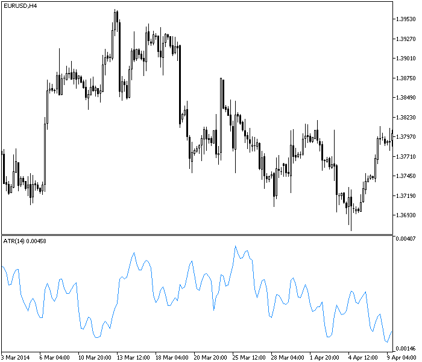
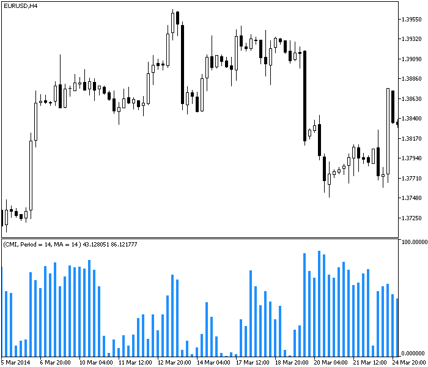
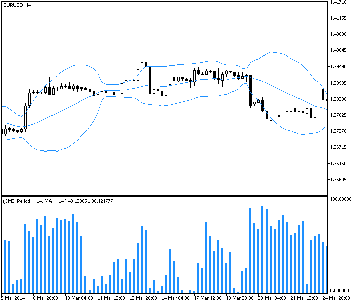
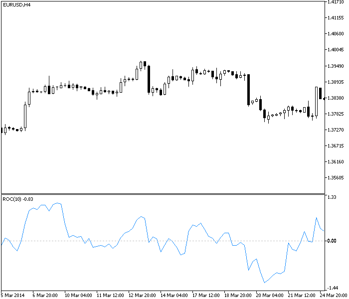

<!DOCTYPE html>
<html>
</html>
<head>
  <meta charset="utf-8">
  <meta http-equiv="X-UA-Compatible" content="IE=edge">
  <title>外汇站（fx-z.com） - 什么是风险管理？</title>
  <meta name="description" content="">
  <meta name="viewport" content="width=device-width, initial-scale=1">
  <meta name="robots" content="all,follow">
  <!-- Bootstrap CSS-->
  <link rel="stylesheet" href="vendor/bootstrap/css/bootstrap.min.css">
  <!-- Font Awesome CSS-->
  <link rel="stylesheet" href="vendor/font-awesome/css/font-awesome.min.css">
  <!-- Google fonts - Roboto-->
  <link rel="stylesheet" href="https://fonts.googleapis.com/css?family=Roboto:400,300,700,400italic">
  <!-- owl carousel-->
  <link rel="stylesheet" href="vendor/owl.carousel/assets/owl.carousel.css">
  <link rel="stylesheet" href="vendor/owl.carousel/assets/owl.theme.default.css">
  <!-- theme stylesheet-->
  <link rel="stylesheet" href="css/style.default.css" id="theme-stylesheet">
  <!-- Custom stylesheet - for your changes-->
  <link rel="stylesheet" href="css/custom.css">
  <!-- Favicon-->
  <link rel="shortcut icon" href="img/favicon.png">
  <!-- Tweaks for older IEs--><!--[if lt IE 9]>
    <script src="https://oss.maxcdn.com/html5shiv/3.7.3/html5shiv.min.js"></script>
    <script src="https://oss.maxcdn.com/respond/1.4.2/respond.min.js"></script><![endif]-->
</head>
<body>
  <div id="all">
    <div class="container-fluid">
      <div class="row row-offcanvas row-offcanvas-left"> 
        <!--   *** SIDEBAR ***-->
        <div id="sidebar" class="col-md-4 col-lg-3 sidebar-offcanvas">
          <div class="sidebar-content">
            <h1 class="sidebar-heading"> <a href="https://fx-z.com">fx-z.com</a></h1>
            <p class="sidebar-p">介绍外汇相关的基本知识，告诉您如何进行自己的技术面和基本面分析，讲解先进的交易理念，并且为您阐述失败交易者与专业交易者之间的真正区别。 </p>
            <p class="sidebar-p">通过这些课程的学习，您将学会如何根据自己的优势来应用情绪分析，还将了解真实世界的事件会对货币汇率产生什么影响，央行在外汇市场中所发挥的作用，以及交易者在颇受欢迎的即期外汇交易中有哪些选择方案。 </p>
            <ul class="sidebar-menu">
                <!-- Link-->
                <li class="sidebar-item"><a href="https://fx-z.com" class="sidebar-link">首页</a></li>
                <!-- Link-->
                <li class="sidebar-item"><a href="cihui.html" class="sidebar-link">外汇词汇</a></li>
                <!-- Link-->
                <li class="sidebar-item"><a href="ebook.html" class="sidebar-link">获取外汇电子书</a></li>
            </ul>
            <p class="social"><a href="https://www.cn-forextime.com/zh?partner_id=4920383" target="_blank"data-animate-hover="pulse" class="external facebook"><i class="fa fa-eur"></i></a><a href="https://www.cn-forextime.com/zh?partner_id=4920383" target="_blank" data-animate-hover="pulse" class="external gplus"><i class="fa fa-gbp"></i></a><a href="https://www.cn-forextime.com/zh?partner_id=4920383" target="_blank" data-animate-hover="pulse" class="external twitter"><i class="fa fa-rmb"></i></a><a href="https://www.cn-forextime.com/zh?partner_id=4920383" target="_blank" title="" class="external instagram"><i class="fa fa-dollar"></i></a><a href="https://www.cn-forextime.com/zh?partner_id=4920383" target="_blank" data-animate-hover="pulse" class="email"><i class="fa fa-money"></i></a></p>
            <div class="copyright text-center text-md-left">
             
              
            </div>
          </div>
        </div>
        <!--   *** SIDEBAR END ***  -->
        <!--   *** DETAIL ***-->
        <div class="col-md-8 col-lg-9 content-column white-background">
          <div class="small-navbar d-flex d-md-none">
            <button type="button" data-toggle="offcanvas" class="btn btn-outline-primary"> <i class="fa fa-align-left mr-2"></i>菜单</button>
            <h1 class="small-navbar-heading"> <a href="https://fx-z.com/17-2.html">下一篇 </a></h1>
          </div>
          <div class="row">
            <div class="col-xl-10">
              <div class="content-column-content">
                <h1>什么是风险管理？</h1>
  <p>
    <strong>外汇交易的风险包括：</strong>
</p>
<p>
    <strong>国家风险</strong>（例如评级下调）
</p>
<p>
    <strong>主权风险</strong>（例如资产被冻结、没收）
</p>
<p>
    <strong>流动性风险</strong>（如果您是卖家，您将找不到买家）
</p>
<p>
    <strong>信用风险</strong>（交易对手或经纪商破产）
</p>
<p>
    <strong>价格风险</strong>（价格在未经提醒的情况下向对您不利的方向快速变化）
</p>
<p>
    您应该交易一种国家风险或主权风险的货币，即主要货币。如果您选择交易一种新兴货币或前沿货币，您将面临国家风险、主权风险和流动性风险。一旦危机爆发，节节溃败的价格几乎令您束手无策。至于信用风险，您可以将经纪账户设在资金充足的经纪商平台，进而最大程度地控制信用风险，而且经纪商不应在监管机构处留有欺诈或交易失败的不良记录，此外，或许最重要的是，没有被可靠度较高的聊天室或博主投诉。
</p>
<p>
    <strong>价格风险</strong>
</p>
<p>
    作为一项日常的实际问题，您真正能管理的是价格风险。高端风险管理行业用一些高大上的词汇来形容如何识别和降低风险，但若要成为一位成功的外汇交易者，这归结于一些统计工作。您可以进行大量或少量统计工作，但无论多少，您都需付诸实践。
</p>
<p>
    <strong>衡量价格风险</strong>
</p>
<p>
    假设您想交易 EUR/USD 并且认为您的持有期应该为 240 分钟或 4 小时，且最长为一至三天）。您计划采用 4 小时图表。您首先需要提出的问题是，在 4 小时图表较长时间内的平均高低点范围是多少。如果您的数据源提供 ATR 或平均真实波动范围，这就不难知道。
</p>
<p>
    下图显示 EUR/USD 的 4 小时图表，其下方显示了 ATR。价格序列有时上涨、有时下跌——您会发现 ATR 可能受到价格方向的影响，因此您希望同时获得上涨和下跌趋势的 ATR。ATR 在 14 个时段内从最低 0.00146 点向 0.00407 点变化，中间大约经历 2.33 个日历日。这一起点并不糟糕，因为您目前知道，您可以预期每个 4 小时时段内平均会出现 27.7 点价格变化，其中最低为 14.6 点、最高为 40.7 点。这将在您设置止损位和目标位时派上用场。
</p>
<p>
     通过平均真实波动范围指标衡量价格。
</p>
<p>
    另一种理念是“最大偏移”，即倒过去查看大量历史价格的数据并找到最短时间内的最大变动。假设过去十年内，GBP/USD 在三周内变动 500 点的情况出现三次。您会将 500 点视为您的风险金额。假设您最久将持仓三周，请将它乘以您将要交易的手数，以计算您的最大亏损。许多交易者并未这样计算，但这确实是一项有趣的操作。
</p>
<p>
    <strong>衡量波动率</strong>
</p>
<p>
    但这并未衡量价格的变化快慢，即它改变方向的速度有多快。为此，您需要用到一项被称为“波动性”的指标。波动性指标有多个版本。本文提到的波动性是 MetaTrader 5 版本。波动性是表示市场方向的一项函数。趋势货币的波动性指标值较低，而非趋势货币对的指标值较高。波动性的数值可能在 0 到 100 的范围内。指标值越高，价格的波动性越大。指标值越低，市场的趋势越强。
</p>
<p>
    由于波动性是一项回顾型指标，它有一段用于设置回顾时段的时间长度。默认时间长度为 14 根蜡烛图。
</p>
<p>
    重要之处在于要掌握波动性指标是用于对趋势的判断，如 Wells Wilder 于 1978 年制定的平均动向指数（ADX）一样。这项公式过于复杂（例如，方向变化程度的计算方式是将两个连续低点之间的差值与两个高点之间的差值进行比较）。重要的是，当价格进入趋势中时，您面临价格突然偏离的风险更低。
</p>
<p>
     通过波动性指标衡量价格风险。
</p>
<p>
    我们该如何解读上图中的数据？首先要注意，在图表左侧的上行突破顶峰之后以及图表中央的下行突破之前，波动性指标大幅上升。这说明当市场快速变化时，如果您持仓错误，您面临着较高的价格风险。当然，如果您持仓正确，波动率将带来机遇。请注意图表中央，当欧元处于区间盘整交易且无法到达前一个最高点时，波动率也在上升。这就像收缩成收敛状态的布林线。实际上，如果您在图标上设置布林线，您会见到收敛状态刚好出现在下行突破之前。波动性图表的重要之处在于，它提供了衡量波动率和价格风险的方法。当波动率较低时，您的风险更低。当波动率较高时，您的风险更高。
</p>
<p>
     通过波动性指标和布林线衡量价格风险。
</p>
<p>
    我们有数不胜数的衡量波动性的方法，包括常规标准、标准差和标准误差等。若要进一步了解这两种衡量方法，请查阅关于布林线和通道的课程。这两种衡量方法的问题在于，它们未在图表上提供任何相关见解（因此，我们并未显示它们）。正如在布林线和线性回归通道中一样，这两种统计方式在添加背景后更适合交易者观察。
</p>
<p>
    另一种掌握波动率的方法是利用变化率，而变化率是一项显示当前价格减去 X 时段前价格的简单指标。您可以用图表软件将它显示为点状或百分比。通常而言，您此时应该考虑点状。下图为 4 小时周期变化率在这种显示方法中，零线标注着 4 小时曲线的收盘价与 10 时段之前的收盘价相比毫无变化；这 10 时段约为 1.67 天，因为这是 10 时段回顾期。左侧高点为 1.2346，右侧低点为 1.1406，其差值约为 7.6%。这意味着，如果您在最高价附近买入且未能离场，您的定单亏损将会是 7.6%。实际上，是否真有许多交易者利用 ROC（变化率）来分析头寸风险，这一点令人质疑，但偶尔关注一下它也并非没有价值。
</p>
<p>
     通过变化率衡量价格风险
</p>
<p>
    若要了解您的亏损风险，您需要了解最小、最大和平均价格变化，以及该变化在预期持有期内的变化速度。如果您的持有期是四小时或三天，则关注一天持有期的价格变化百分比或变化率是没有意义的。
</p>
<p>
    <br/>
</p>
<p>
    <br/>
</p>
              </div>
            </div>
          </div>
        </div>
      </div>
    </div>
  </div>
  <!-- JavaScript files-->
  <script src="vendor/jquery/jquery.min.js"></script>
  <script src="vendor/popper.js/umd/popper.min.js"> </script>
  <script src="vendor/bootstrap/js/bootstrap.min.js"></script>
  <script src="vendor/jquery.cookie/jquery.cookie.js"> </script>
  <script src="vendor/owl.carousel/owl.carousel.min.js"></script>
  <script src="vendor/masonry-layout/masonry.pkgd.min.js"></script>
  <script src="js/front.js"></script>
</body>